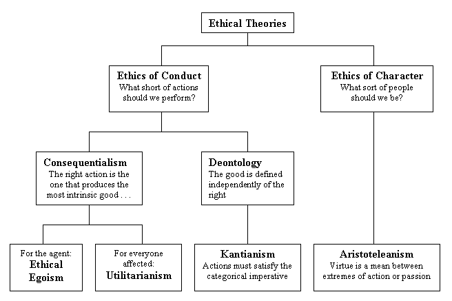

Ethics
Summary, Quick and Simple
Ethics is in essence the study of right and wrong, but more generally it is the study of human interaction. The stereotypical questions asked are "What is right and wrong?" and "What does it mean to be good?". But in reality, the question that concerns most ethicists is "What is value?" Because of this, ethics is known in most academic circles as Value Theory. Topics of interest to ethicists include the definition of value, judgments, intentions, and consequences. Though the question of what is right and wrong may seem a simple question to approach, there is a vast collection of subfields in philosophy to discuss the nuances of the question. Ethics can be divided into three main categories (Metaethics: The study of the possibility of moral facts, Normative Ethics: the study of what exactly makes things right and wrong, and Applied Ethics: the study of how to apply definitions of right and wrong in specific real-life situations like business and medical care) and several related subfields (philosophy of action, responsibility, free will vs determinism, etc.).
Thought Experiments
Trolley Problem
Suppose you are stuck on a runaway trolley. The trolley is barrelling towards five workers at the end of the tracks who won't see or hear you coming until it is too late. However, on the trolley, there is a lever you can pull to redirect the trolley onto a side track. Unfortunately, there is a worker on this track as well and there is no hope for them to escape should you turn down this track. Do you pull the lever?
Utility Monster
Suppose that people decided that the best way to run the world would be to maximize happiness. Now suppose that there is one person who is capable of infinite happiness and for whom it is easiest to maximize happiness. In order to maximize his or her happiness, however, everyone else of course needs to give up their happiness. Should this single person's happiness be maximized?
Why it's important to think about
The unavoidable fact of life is that we have to deal with other people every day. Having common values, or at least understanding each other's values and respecting them, is crucial to keeping everyone alive, well, and happy. We may not always be successful at our attempts to do the right thing, but at least trying to make the world a better place for everyone to live is better than doing nothing or only trying to making things worse for everyone. Keeping promises, paying our bills and loans, fulfilling contracts, following the law - all of these are ethical considerations we make on a regular basis.